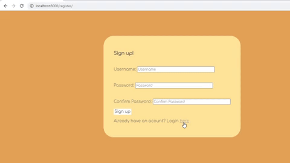

>> ML From Scratch

Machine learning algorithms implemented using only numpy. Includes an
MNIST classification neural network, a logistic regression class, and a
linear regression class.
>> Neural Text

An application that recognizes digits 0 - 9. The neural network was
created using the Tensorflow module and trained on the MNIST dataset.
Using the pygame module, this application allows users to draw a digit
on a canvas the network makes a prediction.
>> Todo App

A Task List developed with the web framework, Django. It supports user
authentication, and has a simple user interface to handle the addition
and removal of tasks.
>> Blog App

Basic Blog App developed using Django framework. Supports user authentication.